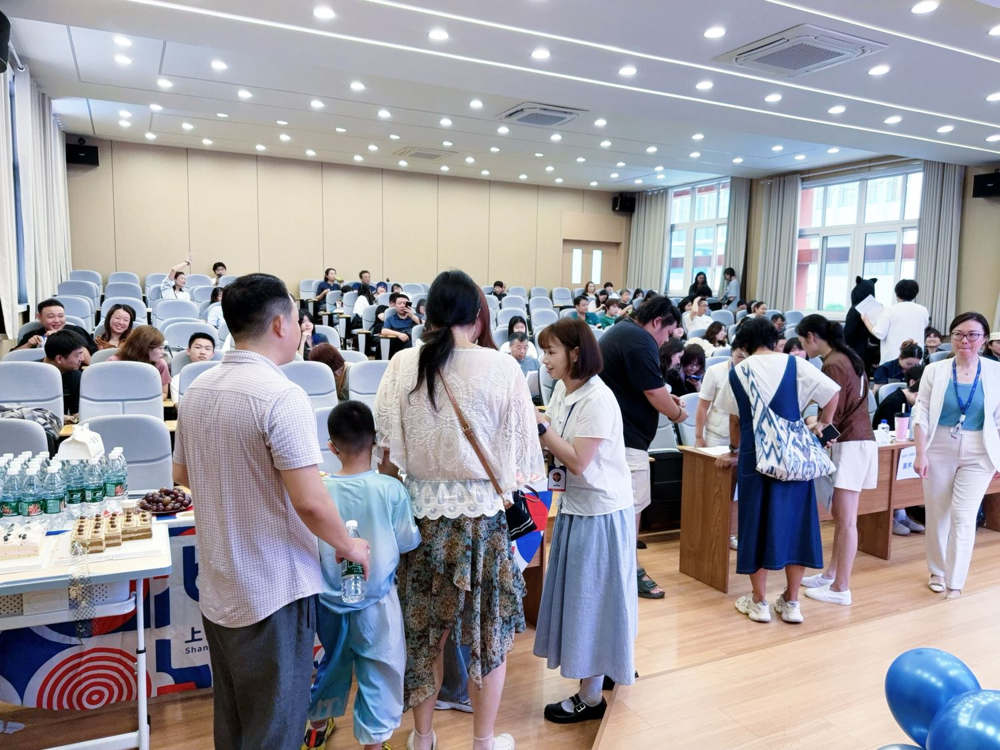

Academic Information
Requirements, Catalog, Grading & Records
The academic framework of the US pathway — published in full and reviewed each academic year. September 2026 edition.
Graduation Requirements
The 21-Credit Program, Grades 10–12
The US pathway follows an American high school curriculum. Students must earn a total of 21 credits to complete the program, following an individual course plan based on entry level, accepted prior study and academic goals. Official transcripts are issued by the academic records office of Boya International Academy.
| Subject area | Credits | Notes |
|---|---|---|
| English Language Arts | 3.0 | Three sequential high school English courses |
| Mathematics | 3.0 | Algebra I, Geometry, Algebra II; advanced study may use elective credits |
| Science | 3.0 | Biology, Chemistry and Physics sequence |
| Social Studies | 3.0 | World Geography, World History, US History and Civics |
| English Language Development | 3.0 | Placement-based language development or an approved academic substitute |
| Physical Education & Health | 1.0 | Two 0.5-credit components |
| Arts | 1.0 | Two 0.5-credit components |
| Electives | 3.0 | Approved courses beyond the core distribution |
| Senior Project | 1.0 | Research paper, product, portfolio or display, and presentation |
| Total required | 21.0 | No credit may be counted twice |
1Complete the Credits
Earn 21 approved credits with the required subject distribution, including the 1.0-credit Senior Project. Enrollment or attendance alone does not award credit.
2Maintain Standing
A cumulative GPA of at least 2.0 on the 4.0 scale, and at least 90% attendance and active participation in each credit-bearing course.
3Residency of Study
At least 25% of the credits required for graduation must be earned through courses supervised by the school.
4Transfer & Placement
Prior high-school records are individually reviewed for authenticity, level and workload before any credit is accepted; no blanket credit is granted for entry at any grade.
Course Catalog
A Three-Year Sequence
A typical course plan by entry level. Each student’s actual plan is set at entry and may change with preparation — the graduation audit always accounts for 21 earned credits and all subject requirements. Course offerings are confirmed annually.
| Entry level | Course plan | Annual total |
|---|---|---|
| Grade 10 | ELA 10 (1.0) · Algebra I (1.0) · Biology (1.0) · World Geography (1.0) · ELD I (1.0) · PE & Health I (0.5) · Arts I (0.5) · Elective (1.0) | 7.0 |
| Grade 11 | ELA 11 (1.0) · Geometry (1.0) · Chemistry (1.0) · World History (1.0) · ELD II (1.0) · PE & Health II (0.5) · Elective (1.0) | 6.5 |
| Grade 12 | ELA 12 (1.0) · Algebra II (1.0) · Physics (1.0) · US History (0.5) · Civics (0.5) · ELD III (1.0) · Arts II (0.5) · Elective (1.0) · Senior Project (1.0) | 7.5 |
| Program total | All subject requirements remain applicable | 21.0 |
ELAEnglish Language Arts 10–12
Literary and rhetorical analysis, research methods, sustained written argument and academic presentation.
MATHAlgebra I · Geometry · Algebra II
A sequential mathematics core; further mathematics (such as Precalculus) may be taken as electives.
SCIBiology · Chemistry · Physics
Laboratory sciences with supervised practical investigation and quantitative modelling.
SOCGeography · World History · US History · Civics
Historical inquiry, evidence interpretation, civic institutions and evidence-based discussion.
Grading & Records
Grading Scale and GPA
D− is the minimum passing grade. GPA is credit-weighted: total eligible quality points divided by total GPA credits, reported to two decimal places. Failed courses remain in the GPA denominator but earn no graduation credit.
| Letter | Percentage | Regular | Honors | AP |
|---|---|---|---|---|
| A | 93–100 | 4.0 | 4.5 | 5.0 |
| A− | 90–<93 | 3.7 | 4.2 | 4.7 |
| B+ | 87–<90 | 3.3 | 3.8 | 4.3 |
| B | 83–<87 | 3.0 | 3.5 | 4.0 |
| B− | 80–<83 | 2.7 | 3.2 | 3.7 |
| C+ | 77–<80 | 2.3 | 2.8 | 3.3 |
| C | 73–<77 | 2.0 | 2.5 | 3.0 |
| C− | 70–<73 | 1.7 | 2.2 | 2.7 |
| D+ | 67–<70 | 1.3 | 1.8 | 2.3 |
| D | 63–<67 | 1.0 | 1.5 | 2.0 |
| D− | 60–<63 | 0.7 | 1.2 | 1.7 |
| F | Below 60 | 0.0 | 0.0 | 0.0 |
| Code | Meaning | Credit and GPA treatment |
|---|---|---|
| IP | In progress | No earned credit or GPA contribution until a final grade is recorded. |
| I | Incomplete | Temporary; no earned credit or GPA contribution until resolved within the published deadline. |
| W | Withdrawn | No earned credit; excluded from GPA. The withdrawal record is retained. |
| P / NP | Pass / No pass | For courses designated pass/fail in advance; P earns the assigned credit, NP earns none. Both excluded from GPA. |
| TR | Accepted transfer credit | Credit accepted after a documented review; the source is identified and the value is excluded from the Boya GPA. |
| R | Repeat notation | Identifies a repeated course; the actual letter grade and GPA inclusion remain visible. |
Academic Records
Transcript Specimen & Verification
Official transcripts identify the student, full course history by grade, attempted and earned credits, grades, GPA basis, transfer sources, graduation status, issue date and authorized signatory. The blank layout below shows the record structure; it contains no student data.
Issuing institution: Boya International Academy — American High School Curriculum, Grades 10–12
| Year / Term | Course code and title | Level | Att. | Earned | Grade | GPA incl. |
|---|---|---|---|---|---|---|
| — | [Course title] | — | — | — | — | Y / N |
| — | [Course title] | — | — | — | — | Y / N |
| — | [Course title] | — | — | — | — | Y / N |
| Record field | Verified result | Record field | Verified result |
|---|---|---|---|
| Attempted credits | — | Unique credits earned (of 21.0 required) | — |
| Accepted transfer credits | — | GPA credits | — |
| Unweighted GPA | — | Weighted GPA | — |
| Senior Project status | — | Graduation date | — |
Authorized officer, signature or secure authentication, issue date and verification contact appear on every official issue. Real student identifiers never appear on a public specimen.

Questions About the Program?
Our admissions team can walk you through the curriculum, credit planning and university counseling in person.